Released on January 7, 2004
(Next Release on January 14, 2004)
Cold Weather in January?
After many Americans, especially those in the Mid-Atlantic and Northeast portions
of the country, found themselves uncharacteristically in shorts over the winter
holiday period, it appears that real winter weather may now be upon them. An
Arctic blast now covering these regions has sent spot oil product prices higher,
even though cold weather during early January is not really that surprising.
So, why are prices rising?
Before attempting to answer this question, it is important to review the early winter period. Despite what seemed to be a rather chilly and snowy month in some regions of the U.S. during December 2003, the National Oceanic and Atmospheric Administration (NOAA) reported that December temperatures were actually more than 5 percent warmer than normal, a continuation of the trend of above normal temperatures reported since the beginning of the heating season in October 2003. More significantly, temperatures in the East Coast and Midwest regions, where a large portion of the nation's heating oil and propane is consumed, reported temperatures that ranged from more than 2 percent to about 15 percent above normal. The relatively mild weather so far this winter has helped to maintain some degree of balance within the normal supply/demand patterns for both distillate fuel oil (used for both heating oil and diesel fuel) and propane (see the December 10, 2003 This Week In Petroleum). As of January 2, 2004, total distillate fuel oil inventories stood at an estimated 135.5 million barrels, 0.2 percent above the 5-year average for this period and 1.6 percent above the same week last year. U.S. inventories of propane ended the week of January 2, 2004 at an estimated 50.0 million barrels, 6 percent below the 5-year average for this period and nearly 5 percent below the same week a year earlier. Regionally, heating oil inventories, along the East Coast, where most heating oil is consumed, were 2.4 percent higher than the 5-year average and 6.5 percent above the year-ago level, as of January 2. Correspondingly, propane inventories in the Midwest, where the most propane is used for heating purposes, were 1.5 percent above the 5-year average and 13 percent above the year-ago level, as of January 2. With heating fuels markets nearing the mid-winter point, the relatively mild weather during the first half of the heating season has left heating fuel product inventories in relatively comfortable shape as these markets begin the second half of the winter heating season. But as can be seen with spot prices for heating oil and propane increasing over the last few days, a bout of cold weather, even in January, can turn the situation around fairly quickly.
So, why have oil product prices been rising recently, even though product inventories are not particularly depressed at the moment? The answer appears to be tight crude oil markets. Crude oil inventories, at 269.0 million barrels, are the lowest since weekly data has been collected, and probably the lowest since the autumn of 1975. Moreover, total oil inventories (crude and product combined) remain moderately (50 million barrels) below the 5-year average, limiting flexibility available to refiners. Without adequate crude oil inventories, a quick increase in distillate fuel production would be difficult should the distillate fuel inventory situation turn less comfortable, and, regardless, would inevitably tighten the outlook for gasoline. One has to look no further than last year, when distillate fuel inventories dropped by nearly 36 million barrels in the seven-week period between January 10 and February 28, 2003 to see how quickly the distillate fuel inventory situation can change during the winter period. A sustained bout of cold weather, such as the Northeast and Mid-Atlantic states are beginning to feel today, is certainly capable of causing a sharp drop in distillate fuel inventories, as weather was a major reason behind the sharp drop in inventories last year. Of course, one notable difference this year is that crude oil imports from Venezuela have not been drastically reduced, as they were at the beginning of 2003. Still, oil markets appear to remain wary of what might occur, and with the continuation of low inventories, particularly for crude oil, many scenarios for the remainder of this winter are still possible.
U.S. Retail Average Gasoline Price Gains Over 3 Cents
The U.S. average retail price for regular gasoline rose last week by 3.2 cents
per gallon as of January 5 to reach 151.0 cents per gallon, which is 6.6 cents
per gallon higher than a year ago. Retail regular gasoline prices were up throughout
most of the country last week, with the Midwest seeing by far the largest increase
of 5.9 cents to hit 149.9 cents per gallon. California prices averaged 161.7
cents per gallon after gaining 2.2 cents this past week. The Rocky Mountain
region was the only region to show a decrease, with prices falling 0.5 cent
to reach 149.3 cents per gallon.
Retail diesel fuel prices inched up by 0.1 cent per gallon as of January 5 to a national average of 150.3 cents per gallon, which is 0.2 cent per gallon higher than a year ago. Retail diesel prices were mixed last week, with New England seeing a price increase of 0.6 cent to reach 166.2 cents per gallon while the West Coast saw a price decrease of 0.2 cent to 162.8 cents per gallon.
Residential Heating Fuel Prices Regain Some Momentum
Residential heating oil prices rose again for the period ending January 5, 2004.
The average residential heating oil price gained 0.9 cent from last week to
reach 150.0 cents per gallon, an increase of 7.2 cents over this time last year.
Wholesale heating oil prices increased 0.6 cent to 93.6 cents per gallon, a
decrease of 1.2 cents compared to the same period last year.
The average residential propane price gained 0.9 cent, increasing to 142.7 cents per gallon. This was an increase of 15.9 cents over the 126.8 cents per gallon average for this same time last year. Wholesale propane prices increased 1.9 cents per gallon, from 70.7 to 72.6 cents per gallon. This was an increase of 9.7 cents from the January 6, 2003 price of 62.9 cents per gallon.
December Draw on Propane Above Average
Primary stockholders of propane withdrew an estimated 11.9 million barrels during
December 2003, a level slightly above the 5-year average of 10.4 million barrels
despite above-average temperatures in most of the major propane-consuming regions
during this period. As of January 2, 2004, U.S. inventories of propane stood
at an estimated 50.0 million barrels, down 2.4 million barrels from the previous
week. However, during the first half of the heating season (October through
December), propane inventories were drawn down by 12.4 million barrels, a level
that was below the 5-year average of nearly 13.4 million barrels. Although December's
above-normal temperatures fell short of blunting the monthly stockdraw, the
combined effects of above-normal temperatures since October was most likely
responsible for the less than average stockdraw experienced during the first
half of the heating season. Moreover, since January and February are typically
the coldest months of the heating season, the second-half stockdraw generally
is much larger, with inventories dropping on average over the most recent 5-year
period by 24.6 million barrels. Consequently, if the combined first-half stockdraw
is added to the 5-year average second-half stockdraw, U.S. inventories of propane
would post a seasonal stockdraw of nearly 37 million barrels, a level far below
the 2002-03 heating season record 48.9 million barrels. Propylene non-fuel use
inventories climbed slightly higher last week to nearly 2.1 million barrels,
representing a 4.2 percent share of total propane/propylene inventories compared
with the prior week's 3.6 percent share.
Text from the previous editions of "This Week In Petroleum" is now accessible through a link at the top right-hand corner of this page.
| Retail Prices (Cents Per Gallon) | |||||||
| 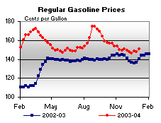 | 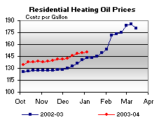 | ||||||
| 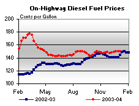 | 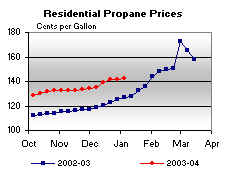 | ||||||
| Retail Data | Changes From | Retail Data | Changes From | ||||
| 01/05/04 | Week | Year | 01/05/04 | Week | Year | ||
| Gasoline | 151.0 | Heating Oil | 150.0 | ||||
| Diesel Fuel | 150.3 | Propane | 142.7 | ||||
| Spot Prices (Cents Per Gallon) | |||||||||||||||||||||||||||||||||||||||
| 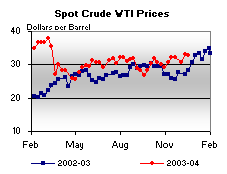 | 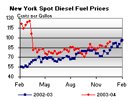 | ||||||||||||||||||||||||||||||||||||||
| 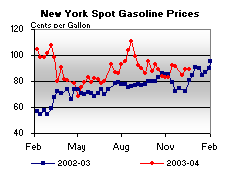 | 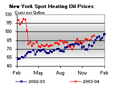 | ||||||||||||||||||||||||||||||||||||||
|
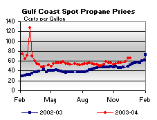 | ||||||||||||||||||||||||||||||||||||||
| Stocks (Million Barrels) | |||||||
| 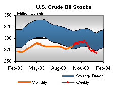 | 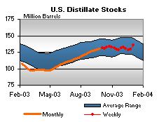 | ||||||
| 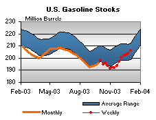 | 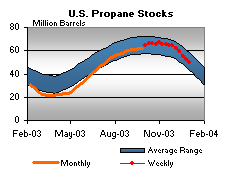 | ||||||
| Stocks Data | Changes From | Stocks Data | Changes From | ||||
| 01/02/04 | Week | Year | 01/02/04 | Week | Year | ||
| Crude Oil | 269.0 | Distillate | 135.5 | ||||
| Gasoline | 206.3 | Propane | 49.970 | ||||